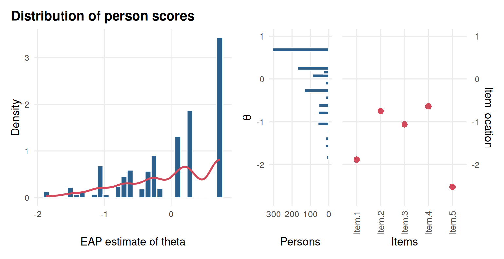
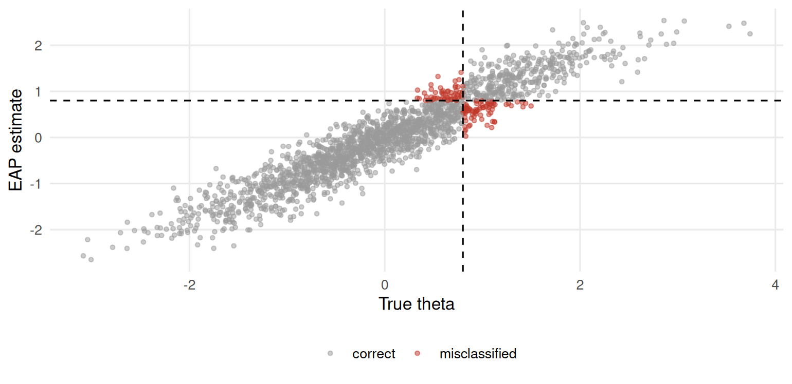

Chapter 7 Scoring people
Learning goals. After this chapter you can
- compare EAP, MAP, ML and WLE scores and say when each is a sensible choice;
- explain why maximum likelihood fails for perfect and zero scores;
- convert sum scores to IRT scores with a conversion table;
- read a Wright map;
- estimate how often people are classified on the wrong side of a cut score.
Key terms: person score, EAP, MAP, ML, WLE, Wright map, classification accuracy.
7.1 The ideas
Once the item parameters are known, we can estimate each person’s \(\theta\) from their responses. The likelihood of a response pattern, viewed as a function of \(\theta\), is the product of the item probabilities: \(P_j(\theta)\) for each item answered correctly and \(1 - P_j(\theta)\) for each item answered wrongly. The four common estimators use it differently.
- ML (maximum likelihood) takes the \(\theta\) that maximizes the likelihood. It uses only the responses, which makes it attractive for fairness arguments, but it does not exist for all-correct or all-wrong patterns (the likelihood keeps rising towards \(\pm\infty\)), and it is biased outwards for short tests.
- WLE (weighted likelihood, Warm (1989)) adds a small correction that removes most of ML’s bias and gives finite estimates for perfect patterns.
- MAP (maximum a posteriori) multiplies the likelihood by a prior distribution for \(\theta\), usually the population distribution, and takes the mode of the result.
- EAP (expected a posteriori) takes the mean of that posterior. It is easy to compute, always finite and has the smallest average error, which is why it is mirt’s default. Like MAP, it shrinks estimates towards the population mean, more so when the test is short.
The standard error of an EAP estimate is the standard deviation of the posterior, and it comes for free.
For the Rasch model the sum score carries all the information about
\(\theta\), so everyone with the same sum score gets the same estimate. For the
2PL and 3PL, two people with the same sum score can get different estimates,
because correct answers to steep items count for more. Some programmes still
want one score per sum score. EAP for sum scores (method = "EAPsum")
gives exactly that, and produces a conversion table that can be printed in a
manual.
7.2 Example 1: Four estimators, one short test
With only five items, the differences between estimators are easy to see.
mod <- mirt(resp, 1, itemtype = "2PL", verbose = FALSE)
patterns <- unique(resp)
est <- sapply(c("EAP", "MAP", "ML", "WLE"), function(m)
fscores(mod, method = m, response.pattern = patterns)[, "F1"])
scored <- data.frame(pattern = apply(patterns, 1, paste, collapse = ""),
sum = rowSums(patterns), round(est, 2))
scored[order(scored$sum, scored$EAP), ][c(1:4, 15:18, 29:32), ]
#> pattern sum EAP MAP ML WLE
#> 1 00000 0 -1.87 -1.82 -Inf -4.14
#> 13 00001 1 -1.53 -1.49 -3.12 -2.60
#> 32 00010 1 -1.51 -1.48 -3.07 -2.56
#> 173 10000 1 -1.41 -1.39 -2.71 -2.31
#> 264 10100 2 -0.65 -0.69 -1.17 -1.15
#> 107 01100 2 -0.61 -0.65 -1.11 -1.10
#> 230 10011 3 -0.75 -0.78 -1.31 -1.26
#> 100 01011 3 -0.70 -0.74 -1.25 -1.21
#> 145 01111 4 0.14 0.06 0.13 -0.22
#> 525 11101 4 0.27 0.18 0.43 -0.03
#> 661 11110 4 0.28 0.20 0.47 -0.01
#> 693 11111 5 0.73 0.64 Inf 1.09Read the table from top to bottom. For the all-wrong pattern ML gives
-Inf, and for the all-correct pattern Inf; WLE, MAP and EAP give finite
values. EAP and MAP are pulled towards zero compared with ML and WLE. And
patterns with the same sum score get different scores under the 2PL,
because Item.3 (the steepest) counts for more than Item.5.
The sum-score conversion table:
fscores(mod, method = "EAPsum", full.scores = FALSE)
#> Sum.Scores F1 SE_F1 observed expected std.res
#> 0 0 -1.870 0.693 12 10.1 0.601
#> 1 1 -1.432 0.684 40 44.7 0.697
#> 2 2 -0.949 0.694 114 109.8 0.403
#> 3 3 -0.413 0.721 205 207.7 0.191
#> 4 4 0.152 0.759 321 319.2 0.102
#> 5 5 0.727 0.801 308 308.6 0.031gg_scores() shows the distribution of the estimated scores, and
gg_wright() puts people and items on the same scale. With five easy items
the Wright map shows the problem at once: The items sit low on the scale,
where few people need to be measured.

Figure 7.1: Distribution of the estimated scores (left) and the Wright map of people and items (right) for LSAT7.
7.3 Example 2: A proficiency cut on a mathematics test
We simulate a 40-item end-of-year mathematics test for 2,000 students. The province calls students at or above \(\theta = 0.8\) proficient. Because the data are simulated we know each student’s true \(\theta\), so we can see how often the estimates put students on the wrong side of the cut.
# Simulated 40-item mathematics test; true_theta is known for checking.
set.seed(707)
true_theta <- rnorm(2000)
a <- matrix(rlnorm(40, 0.1, 0.25)); b <- rnorm(40, 0, 1)
resp <- simdata(a, matrix(-a * b), N = 2000, itemtype = "2PL",
Theta = matrix(true_theta))
colnames(resp) <- sprintf("M%02d", 1:40)mod <- mirt(resp, 1, itemtype = "2PL", verbose = FALSE)
eap <- fscores(mod, method = "EAP", full.scores.SE = TRUE)
wle <- fscores(mod, method = "WLE", full.scores.SE = TRUE)
c(cor_eap = cor(eap[, 1], true_theta), cor_wle = cor(wle[, 1], true_theta),
sd_eap = sd(eap[, 1]), sd_wle = sd(wle[, 1]))
#> cor_eap cor_wle sd_eap sd_wle
#> 0.945 0.945 0.947 1.049With 40 items both estimators correlate about 0.95 with the true values, and they rank students almost identically. The EAP scores have a smaller spread than the true values (whose standard deviation is 1) and the WLE scores a slightly larger one: Shrinkage on one side, measurement error on the other.
Now the classification. A student is classified correctly if the estimate and the true value fall on the same side of the cut.
cut <- 0.8
truth <- true_theta >= cut
observed <- eap[, 1] >= cut
table(true = truth, estimated = observed)
#> estimated
#> true FALSE TRUE
#> FALSE 1503 58
#> TRUE 81 358
mean(truth == observed)
#> [1] 0.93In practice we never know the truth, but we can estimate the accuracy from the scores and their standard errors (Rudner 2001). If a student’s posterior is roughly normal with mean \(\hat\theta\) and standard deviation \(SE(\hat\theta)\), the probability that their true \(\theta\) is above the cut is \(1 - \Phi\left((c - \hat\theta)/SE\right)\). Averaging the probability of the side they were classified on gives the expected accuracy:
p_above <- pnorm((eap[, 1] - cut) / eap[, 2])
expected_accuracy <- mean(ifelse(observed, p_above, 1 - p_above))
expected_accuracy
#> [1] 0.935The estimate is close to the accuracy we observed against the truth. The misclassified students are, of course, the ones near the cut:
library(ggplot2)
ggplot(data.frame(true = true_theta, est = eap[, 1], wrong = truth != observed),
aes(true, est, colour = wrong)) +
geom_point(alpha = 0.5, size = 1) +
geom_vline(xintercept = cut, linetype = 2) +
geom_hline(yintercept = cut, linetype = 2) +
scale_colour_manual(values = c(`FALSE` = "grey60", `TRUE` = "#C0392B"),
labels = c("correct", "misclassified")) +
labs(x = "True theta", y = "EAP estimate", colour = NULL) +
theme_mirtverse()
Figure 7.2: True and estimated ability on the mathematics test; misclassified students lie near the cut.
augment() returns the scores, their standard errors and the response data
as one table, ready to export:
7.4 Your turn
- In Example 1, find two response patterns with a sum score of 3 that get different EAP scores. Which items explain the difference?
- Fit the Rasch model to
LSAT7and repeat the EAP table. Do patterns with the same sum score still get different scores? - In Example 2, compute the expected classification accuracy using only the first 15 items. How much does it drop?
- A parent asks why their child, who got 30 of 40 right, has a lower score than a classmate who also got 30 right. Write a short answer.
Solutions
subset(scored, sum == 3)
#> pattern sum EAP MAP ML WLE
#> 65 00111 3 -0.41 -0.47 -0.82 -0.88
#> 100 01011 3 -0.70 -0.74 -1.25 -1.21
#> 114 01101 3 -0.26 -0.32 -0.59 -0.71
#> 137 01110 3 -0.24 -0.31 -0.56 -0.69
#> 230 10011 3 -0.75 -0.78 -1.31 -1.26
#> 278 10101 3 -0.30 -0.37 -0.66 -0.76
#> 329 10110 3 -0.29 -0.35 -0.63 -0.75
#> 440 11001 3 -0.60 -0.64 -1.09 -1.09
#> 465 11010 3 -0.59 -0.63 -1.07 -1.08
#> 507 11100 3 -0.13 -0.20 -0.38 -0.56
rasch <- mirt(expand.table(LSAT7), 1, itemtype = "Rasch", verbose = FALSE)
r_eap <- fscores(rasch, response.pattern = patterns)[, "F1"]
tapply(round(r_eap, 4), rowSums(patterns), function(x) length(unique(x)))
#> 0 1 2 3 4 5
#> 1 1 1 1 1 1
short <- mirt(resp[, 1:15], 1, itemtype = "2PL", verbose = FALSE)
e15 <- fscores(short, full.scores.SE = TRUE)
p15 <- pnorm((e15[, 1] - cut) / e15[, 2])
mean(ifelse(e15[, 1] >= cut, p15, 1 - p15))
#> [1] 0.898- No: Under the Rasch model every pattern with the same sum score gets the same estimate.
- For example: “The test gives more weight to questions that are better at telling apart students who have mastered the material from those who have not. Your child and their classmate answered different questions correctly, so their scores differ slightly even though their number correct is the same.”